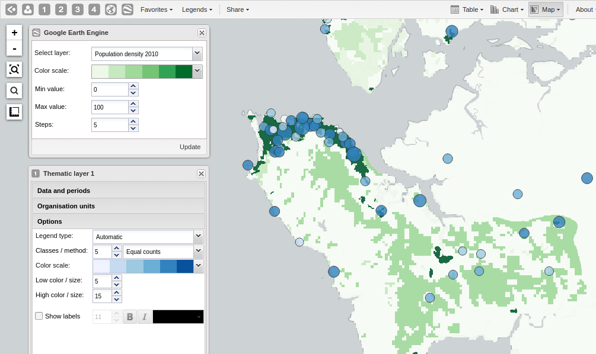

The Earth Engine layer lets you display satellite imagery and geospatial datasets from Google's vast catalog. This layer is useful in combination with thematic and event layers to enhance analysis. The following layers are currently supported:
Elevation: Metres above sea level.
Nighttime lights: Lights from cities, towns, and other sites with persistent lighting, including gas flares (from 2013).
Population density: Population in 100 x 100 m grid cells (from 2010).
Earth engine population density layer
|  |
In the top menu, click the Earth Engine layer icon.
Select a dataset, e.g. "Elevation".
Select min / max values. The meaning of those values depend on which data set you select.
Select a color scale and the number of steps (meaning number of distinct colors in the color scale).
Click Update.